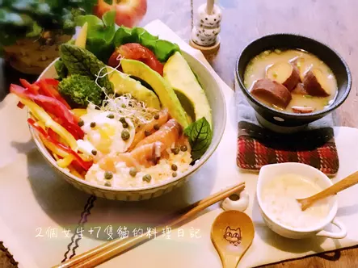
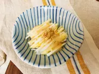

燻鮭魚酪梨沙拉
利用市售煙燻鮭魚，淋上自製優格塔塔醬，再將溫泉蛋戳破後，蘸著醬汁與蛋汁一起享用，入口即化風味迷人，撒上少許酸豆且能提味解膩，極具畫龍點睛之效，搭配份量充足的各式蔬果和五穀飯一起品嚐，毋須花費太多功夫，也不需費心烹調，零廚藝也能輕鬆完成美味又健康的迷人丼飯。
沙拉
宅女小紅從淒厲女友升格成凌厲人妻，文筆仍不改直率敢言，讓雙廚如臨大敵，生怕料理不對胃口砸節目招牌！宅女小紅更開出難題，嗆雙廚不食人間煙火，用料太專業無法讓家庭主婦在飯桌上重現料理，雙廚就要證明料理非難事，用獨門方式料理簡單平價的食材，征服小紅的味蕾！